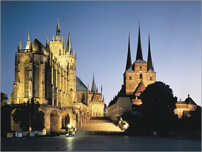
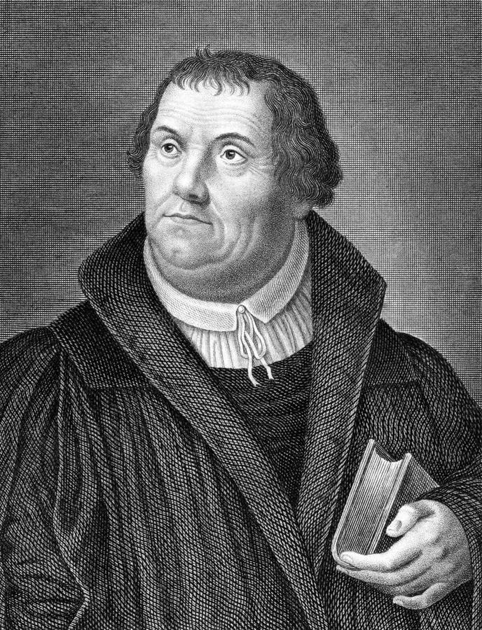

Family Life (not the best)
Luther’s father was a prosperous businessman, and when Luther was young, his father moved the family of 10 to Mansfeld
Article

University Life
In 1501, Luther enrolled at the University of Erfurt where he studied for his undergraduate degree
Article

Post University
Having graduated from the arts faculty, Luther was eligible to pursue graduate work in one of the three “higher” disciplines—law, medicine, or theology.
Go somewhere